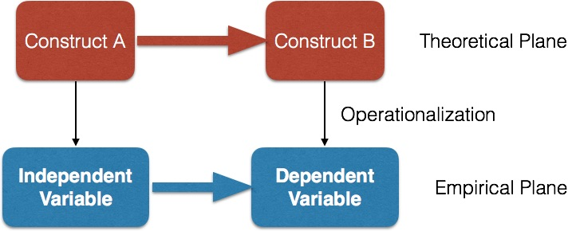
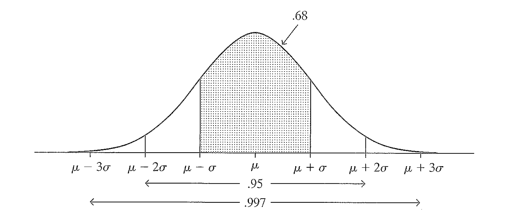
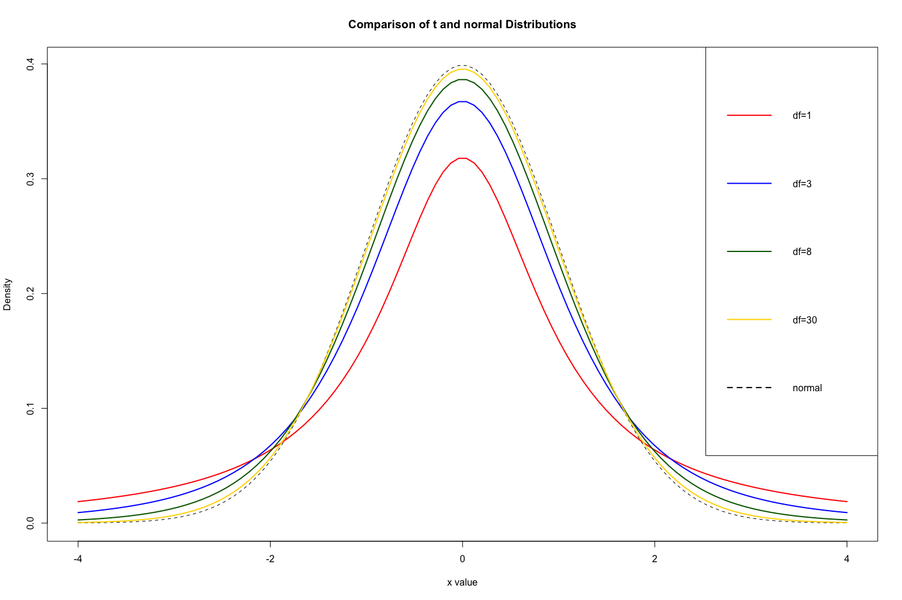

Research Methods for Global Studies
Class 4: Working With Data
Operationalization
From the Theoretical to the Empirical
Constructs
- abstract concepts chosen to explain a phenomenon of interest
Examples of Constructs
- Age
- Education
- Academic aptitude
- Prejudice
- Level of Rights
Variables
- Measurable representations of constructs
Examples of Variables
- Age in years
- Highest degree completed
- Test scores
- Prejudice index
- Rights index
Types of variables
- quantitative vs. categorical
- nominal vs. ordinal vs. interval
- discrete vs. continuous
Class Survey Example
- What experience do you have with academic research? (Please select all that apply.)
- What areas of math and statistics do you feel you understand? (Please select all that apply.)
- What programming languages and computer applications are you familiar with? (Select all that apply.)
- Approximately how many interviews have you conducted for research purposes during the course of your studies?
Class Survey Example
- Which operating system do you prefer to use?
- How long does it normally take you to get to UPF from home? (Please give answer in minutes.)
- How bad is the air pollution in your neighborhood?
- Who is your favorite author?
- How many Twitter followers does your favorite author have (if any)?
- How many Tweets has your favorite author sent (if any)?
Class Survey Example
- Is there any material you would especially like to cover in this course that you do not see on the syllabus? If so, please describe it.
Describing Quantitative Variables
(for population data)$$\textrm{Mean: } \mu = \frac{1}{N}\sum_{i=1}^{N} x_i$$
$$\textrm{Variance: }\sigma^2 = \frac{1}{N}\sum_{i=1}^{N} (x_i-\mu)^2$$
$$\textrm{Standard Deviation: }\sigma = \sqrt{\frac{1}{N}\sum_{i=1}^{N} (x_i-\mu)^2}$$
Data Sources
Traditional Data
- Censuses
- Surveys
- Tests
- Diaries
New Data
- Volume
- Variety
- Velocity
Class Survey
DataR Code
How do you estimate population mean \(\mu\) based on a random sample?
We need to start by understanding probability and distributions
Probability
Frequentist Definition
- probability of a particular outcome from a random phenomenon is the proportion of times that outcome would occur in a very long sequence of observations
Bayesian Definition
- probability as degree of belief that outcome will occur
Basic Rules
$$P(\textrm{not}~A) = 1 - P(A)$$$$P(A ~\textrm{or}~B) = P(A) + P(B)$$
$$P(A ~\textrm{and}~B) = P(A) * P(B|A)$$
If A and B are independent, then: $$P(A ~\textrm{and}~B) = P(A) * P(B)$$
Probability Distributions
-
describe probabilities of all possible outcomes
Example
What is the probability of rolling each value on a six-sided die?
Example
What is the probability that a randomly-selected person is exactly 1.8 meters tall?
Example
What is the probability that a randomly-selected person is between 1.7 and 1.9 meters tall?
The Normal Distribution
Sampling Distribution
- the probability distribution of a particular sampling statistic
Estimation
Point estimate
$$\hat{\mu} = \bar{y}$$- In other words, the estimator, \(\hat{\mu}\), of the population mean, \(\mu\), is the sample mean \(\bar{y}\)
Confidence Interval
$$\textrm{CI}_{a\%} = \bar{y} \pm z\frac{s}{\sqrt{n}}$$- where \(\textrm{CI}_{a\%}\) is the \(a\%\) confidence interval, \(z\) is the number of standard deviations from the mean of a normal distribution corresponding to this interval, \(s\) is the sample standard deviation, and \(n\) is the sample size.
- For example, a 95% confidence interval is calculated as:
- Notes:
- We are assuming here that sample size, \(n\), is large enough for the Central Limit Theorem to hold or that the population distribution is normal (in which case Central Limit Theorem is not needed).
- A more robust approach for small sample sizes and non-normal populations is to use the t-distribution.
- For the 95% confidence interval, we often use \(z=2\) instead of \(z=1.96\) in order to simplify things.
Why does this work?
Step 1
- Central Limit Theorem: For random sampling with a large sample size \(n\), the sampling distribution of the sample mean \(\hat{y}\) is approximately a normal distribution.
Step 2
$$\sigma_{\bar{y}} = \frac{\sigma}{\sqrt{n}}$$- In other words, the standard error of the sample mean (i.e. the standard deviation of the sampling distribution for the mean), \(\sigma_{\bar{y}}\), is equal to the population standard deviation, \(\sigma\), divided by the square root of the sample size, \(n\).
Step 3
$$\hat{\sigma} = s = \sqrt{\frac{1}{n-1}\sum\left(y-\bar{y}\right)^2}$$- As an estimator of the population standard deviation, \(\hat{\sigma}\), we use the sample standard deviation, \(s\).
Student's t distribution

Student's t distribution
Student's t distribution
- Bell-shaped and symmetric about a mean of 0
- Standard deviation and shape depend on degrees of freedom (\(df\))
- For inference about a population mean, \(df = n - 1 \)
- As \(df\) increases, t becomes more like normal; almost identical at \(df=30\)